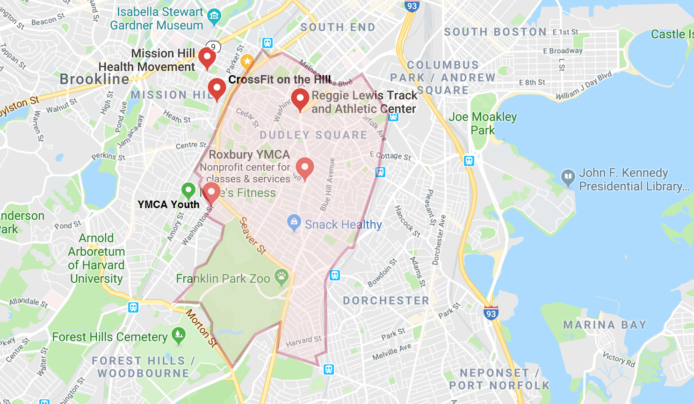

A CITY DIVIDED IN LIFE AND DEATH
Two stops on the Orange Line. That’s all it takes to erase a quarter-century off of your life.
Credit: Hanyang Dong
Credit: Hanyang Dong
Boston is a city segregated by race, income, and education. No statistic, however, shows Boston’s inequality in starker terms than the variance in life expectancy rates across the city.
Life Expectancy in Boston Neighborhoods
Parts of the Roxbury neighborhood have a life expectancy of less than 59 years – the shortest in all of Boston, according to a Virginia Commonwealth University (VCU) study from 2012. Less than half a mile away across Massachusetts Avenue, residents of Back Bay have city’s highest life expectancy of almost 92 years.
And Roxbury’s life expectancy stands out internationally. There are 224 countries in the world, and only 16 have a life expectancy that is lower than Roxbury’s, according to the CIA’s World Factbook. The average adult in Syria, Iraq, or the Gaza Strip, for example, can expect to live almost 15 years longer than the average adult living in a Boston suburb.
Rosana Rivera, owner of Latino Beauty Salon in the heart of Egleston Square, where the life expectancy is only slightly better at 62 years old, says her neighborhood has changed a lot in the 20 years she has lived here. Frequent police patrols have made the notoriously dangerous neighborhood a lot safer, but that has simultaneously increased home values, raised rents, and made small paychecks feel even smaller.
“Last week I had a doctor’s appointment and I had to cancel because I have clients,” says Ms.Rivera. “If I don’t come to work, I don’t make money.”
Rosana Rivera, owner of Latino Beauty Salon, located in Egleston Square. /Yinglong Chen
Roxbury has the most stabbings and shootings of anywhere in the city, according to... but the violence and drug busts that lead Boston’s evening news are not responsible for the neighborhood’s shocking life expectancy, say health professionals. Instead, local leaders point to the hidden social determinants of health that define residents’ everyday life, such as accessibility to healthy foods, places to exercise, and good paying jobs that pay for safe homes. People like Rivera – who are forced to skip a doctor’s appointment to make ends meet – are commonplace.
“Social barriers hinder access to healthcare, and somethings beyond healthcare, just health. You’ll find the same phenomenon across the world,” says Dr. Holly Oh, chief medical officer at the Dimock Health Center, just off Washington St. in Roxbury’s Egleston Square neighborhood, where she has worked for 17 years. “People have to make choices about basic needs they have to meet. Health care often becomes the trade-off.”
"People have to make choices about basic needs they have to meet. Health care often becomes the trade-off."
New changes coming to MassHealth, Massachusetts’ Medicaid program, plan to address these social determinants of health that plague Roxbury.
On March 1, MassHealth will launch its Affordable Care Organization
(ACO) program, in which 17 health care organizations will partner with 27 “Community Partners” who understand specific community-based health challenges and support “health-related social needs.” Under this new plan, which will cover approximately 850,000 MassHealth members, ACOs will be financially responsible for their quality of care, which means they have an economic incentive to address social determinants that influence the overall health of patients.
Boston City Councilor Kim Janey is not surprised by the dramatic life expectancy in Roxbury, a neighborhood she represents in her district.
“Poverty is one of the most – if not the most – violent thing that people experience, particular in communities of color,” says Councilor Janey. “We should not be okay with living in a city where quality of education, ability to earn a living and take care of your family, is determined by zip code. And right now that is what it is. We have to do something about this as a city.”
Eight years ago when he first started working at Egelston Market II off of Washington Street, Francis Mendez says he used to see at least one shooting every week.
“Now, more white people will live here,” says Mr. Mendez. “It’s more safe.”
Francis, the owner of Egleston Market Square II /Yinglong Chen
The market has between 100 to 200 customers a day, says Mendez, while standing behind a glass wall of sugary treats. The market has started catering to the neighborhood’s new residents, with baskets of bruised bananas, oranges, and avocados for purchase. The new white residents are more likely to buy a $2.50 avocado, says Mendez, while the majority of customers “buy the sweet stuff, or a bag of chips.”
Dr. Steven Woolf, Director of the VCU Center on Society and Health, who co-authored the 2012 study on life expectancies across Boston neighborhoods, says there are “five buckets” that shape overall health in Boston and beyond.
Besides adequate health care, health discrepancies are have four sources: behaviors (Do you smoke?), physical environment influences (Do you live near open green spaces to exercise?), socio-economic conditions (Can you afford the bus ticket to go to the doctor?), and public policy (Can you afford rent and food on minimum wage?)
“These all influence downstream factors,” says Woolf. “You can go through each of the five buckets and understand why Roxbury would have poorer health than people in other neighborhoods.”
Over the sound of hair dryers whirling in the background, Rivera says she suspects the lack of walkable healthy food options in Egleston Square is a problem. The neighborhood’s large elderly population can’t walk far, she says, and the majority of residents can’t afford frequent $2.00 bus passes so junk food at local markets is often the only option.
Comparing healthy resources
Show me:
Google Maps registers almost 40 gyms in Back Bay, compared to four gyms in Roxbury, one of which belongs to a local community college. And if Back Bay residents want to exercise for free, they have the nearby Charles River Esplanade, Boston Common, or Boston Public Garden. Egleston Square residents’ only outdoor option are narrow streets with fast car traffic and splintered sidewalks and a handful of children’s playgrounds.
“The Roxbury Community College is not far from here, so we have lots of youth working out here,” says Tim Botto, Director of Operations at the Roxbury YMCA. But he agrees that resources are limited: “In a one-mile circle, we are the only gym.”
Meanwhile, a billboard for McDonald’s “dollar menu” stands in the middle of the gym’s parking lot.
Beyond diet and exercise, there are less obvious social determinants that have a comparable impact on health, says Oh, such as literacy, education, housing, and language proficiency.
In Back Bay’s 02116 zip code, the median individual income is $100,000 and about 76 percent of residents have at least a bachelor’s degree. In Roxbury’s 02119 zip code, the median income is $30,000 and roughly 24 percent of residents have more than a high school diploma. Compared to Back Bay, almost twice as many residents in Roxbury “speak a language other than English” at home.
“How can you refrigerate your insulin if you don’t have stable housing? Can you read what is written on your pill bottle? Or understand what the doctor told you?,” says Oh. “It may feel indirect, but the more you help people with upward mobility, it helps care for the other pieces.”
The disparity between glistening city centers and low-income housing is nothing new, but the sharp proximity is what makes Boston different, says Woolf.
“We see this in other cities, but it is dramatized in Boston: the disadvantaged neighborhoods are a stone’s throw away from major academic medical centers,” says Woolf. “The neighborhoods in the shadows of glistening hospitals are dying early.”
Going forward, potential progress & solutions
It’s possible to turn around these disparities, says Doug Jutte, executive director of the Build Healthy Places Network, an organization working to improve public health by facilitating communication between development and health professionals.
"You will consistently see health disparities lining up with social-economic demographics."
He has seen multiple US neighborhoods themselves around, including East Lake, Georgia. Two decades ago, the disparities between East Lake and nearby Atlanta were similar to that of current Back Bay-Roxbury dynamic.
Although the health of the area wasn’t recorded, life expectancies were likely low, says Dr. Jutte: East Lake was nicknamed “Little Vietnam” because it often felt like a warzone.
After joining forces with the group Purpose Built Communities in 1995, East Lake slowly started becoming the new neighborhood it is today – recently boasting a high school graduation rate of 100 percent – by addressing the social determinants of health.
“And though health was not an explicit focus early on,” writes Jutte’s Network in their evaluation of East Lake, “by creating high-quality housing, a strong ‘cradle-to-college’ educational system, economic development, and a safe, stable and appealing neighborhood, the project addressed fundamental factors that contribute to good health and well-being.”
ACO health care models, like the plan Massachusetts is set to soon enact, is a good first step, says Jutte. Hospitals will now get paid to keep people well, instead of getting paid after treating someone who is sick.
“Its get the incentive in the right direction which is important,” says Jutte.
But high quality health can’t raise Roxbury’s health expectancy alone, says Councilor Janey. If residents can’t make a living to support their families, it is all for naught.
“We have to make sure we are addressing the growing income inequality in our city – that families have an opportunity to earn a real living wage, be in safe housing they can afford, and that their children have opportunities to be in great schools,” says Councilor Janey. “To have strong neighborhoods we have to have strong families. We will continue to see these disparities if we are not intentional about how we attack them.”
MORE STORIES IN WASHINGTON STREET